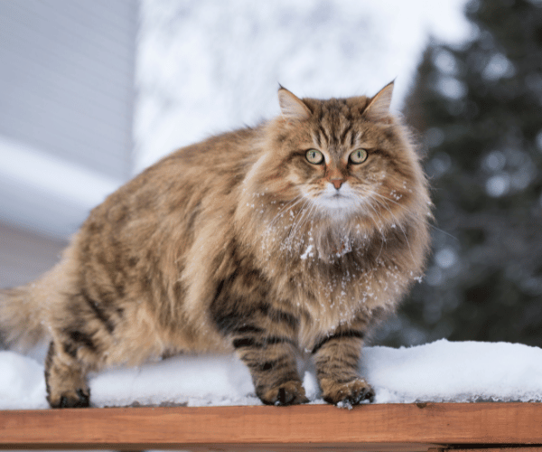
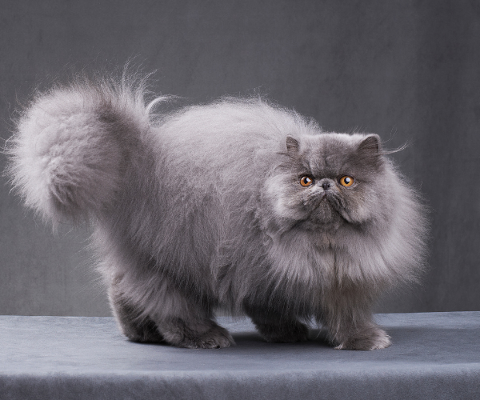
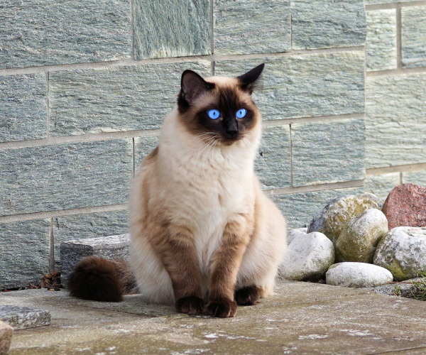

Sibiřská kočka
Sibiřská kočka nepotřebuje žádnou náročnou péči o srst. Má samočisticí schopnost, takže by se vůbec neměla koupat, aby se její srst nepoškodila. Stačí je česat asi jednou týdně. Výhodou silné vrstvy pesíků je, že srst neplstnatí.

Perská kočka
Kromě milého „dětského“ výrazu zaujme perská kočka především svou bohatou srstí. Dlouhá léta byla péče o tuto srst strašákem pro případné zájemce o perské koťátko.

Siamská kočka
Siamská kočka vyžaduje pozornost a bývá ráda jejím středem, miluje mazlení a hlazení, naučí se i aportovat hračky. Hlasitě projevuje svoje nálady – kocour v říji až tak hlasitě, že o tom ví širé okolí.